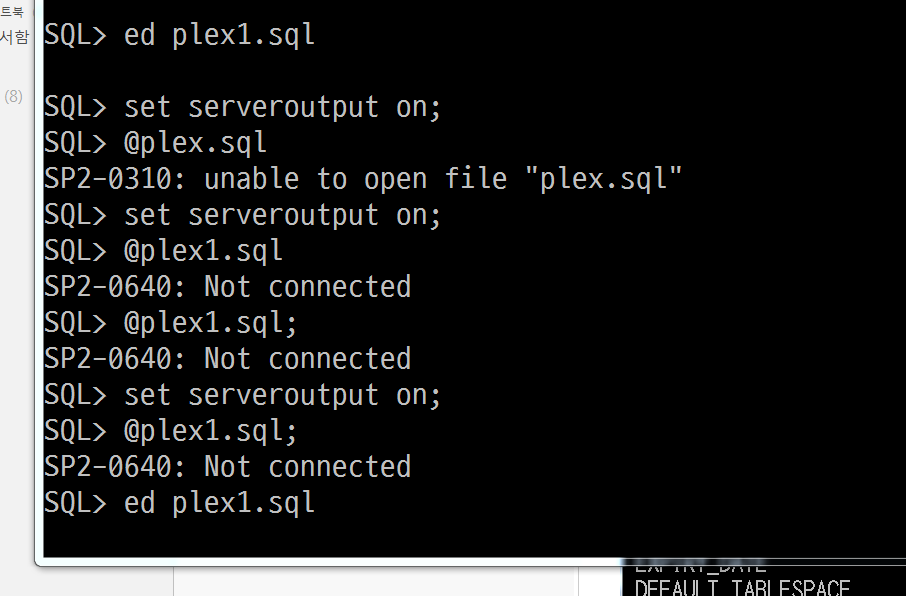

PL / SQL
- 커서
- 인터페이스등에사용
- FOR A IN LOOP
- --명시적 커서의 OPEN,FETCH가 자동적으로 수행 됨
- STATEMENT1;
- STATEMENT2;
- .....
- END LOOP;
- DBMS_OPT.PUT_LINE < SYSOUT
프로시저는 IN / OUT밖에 없고
다른건 RETURN이 있다. (public void 등)



accept bun prompt '사원번호 입력 :'
declare
vsabun sawon.sabun%type;
vsaname sawon.saname%type;
vsapay sawon.sapay%type;
begin
--select ~ into : into 뒤에 기술한 변수에 select 값을 대입
select sabun, saname, sapay into vsabun, vsaname, vsapay
from sawon where sabun = &bun;
--출력
dbms_output.put_line('실행결과');
dbms_output.put_line('사원번호 : '||vsabun);
dbms_output.put_line('이름 : '|| vsaname);
dbms_output.put_line('급여 : '|| vsapay);
end;
/

accept bun prompt '사원번호 입력 :'
declare
vsawon sawon%rowtype;
begin
--select ~ into : into 뒤에 기술한 변수에 select 값을 대입
select * into vsawon
from sawon where sabun = &bun;
--출력
dbms_output.put_line('실행결과');
dbms_output.put_line('사원번호 : '||vsawon.sabun);
dbms_output.put_line('이름 : '|| vsawon.saname);
dbms_output.put_line('직책 : '|| vsawon.sajob);
dbms_output.put_line('급여 : '|| vsawon.sapay);
end;
/

/*
사원테이블에서 입력받은 사원의 평균 급여를 계산해주는 PL/SQL을 만드시오.
단, %TYPE을 써서 작성해보기
*/
accept bun prompt '부서번호'
declare
vdeptno sawon.deptno%type;
vdname dept.dname%type;
vavg sawon.sapay%type;
begin
select s.deptno deptno, d.dname dname , avg(nvl(s.sapay,0))
into vdeptno, vdname, vavg
from sawon s, dept d where s.deptno = d.deptno and s.deptno = &bun
group by s.deptno, d.dname;
----출력
dbms_output.put_line('실행결과');
dbms_output.put_line('부서번호 : '||vdeptno);
dbms_output.put_line('이름 : '|| vdname);
dbms_output.put_line('직책 : '|| vavg);
end;
/
PL/SQL 한번실행하면 땡
PROCEDURE (프로시저) - 메모리에 저장함.


트리거
/*****
Trigger(트리거)
지정한 이벤트 (DML)가 발생하면 수행되는 명령어들을 포함하는 객체
호출문이 없다 (자동호출)
데이터 흐름 제어명령(TCL)은 사용할 수 없다!
목적
1. 데이터 무결성 구현 (제한조건으로 구현할 수 없는 경우)
2. 업무 자동화 (연금계산, 급여계산,..회계관리 등 연쇄작용하는 업무에 많이 사용)
3. 보안 (감사)성 강화하는데 사용 (이벤트를 발생한 유저 기록 관리)
4. 데이터 복제 구현
형식
create or replace trigger t1
[before|after] insert or delete or update on table_name
for each row ***행 단위의 트리거
declare
지역변수 선언;
begin
명령;
end;
old.컬럼명 : 삭제된 행의 컬럼값, 행 단위 트리거에서만 사용 가능! 이전 데이터
new.컬럼명 : SQL 반영이된 이후에 컬럼 데이터
create table gogek_ex as select * from gogek;
*/
create or replace trigger gogek_i
after insert on gogek
for each row
begin
insert into gogek_ex
values(:new.gobun,:new.goname,:new.gotel,:new.gojumin,:new.godam);
end;
/

/*****
Trigger(트리거)
지정한 이벤트 (DML)가 발생하면 수행되는 명령어들을 포함하는 객체
호출문이 없다 (자동호출)
데이터 흐름 제어명령(TCL)은 사용할 수 없다!
목적
1. 데이터 무결성 구현 (제한조건으로 구현할 수 없는 경우)
2. 업무 자동화 (연금계산, 급여계산,..회계관리 등 연쇄작용하는 업무에 많이 사용)
3. 보안 (감사)성 강화하는데 사용 (이벤트를 발생한 유저 기록 관리)
4. 데이터 복제 구현
형식
create or replace trigger t1
[before|after] insert or delete or update on table_name
for each row ***행 단위의 트리거
declare
지역변수 선언;
begin
명령;
end;
old.컬럼명 : 삭제된 행의 컬럼값, 행 단위 트리거에서만 사용 가능! 이전 데이터
new.컬럼명 : SQL 반영이된 이후에 컬럼 데이터
create table gogek_ex as select * from gogek;
*/
create or replace trigger gogek_d
after delete on gogek
for each row
begin
delete(:old.gobun,:old.goname,:old.gotel,:old.gojumin,:old.godam);
end;
/